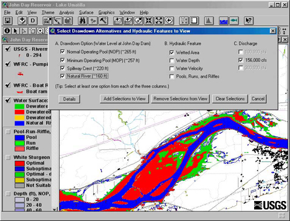
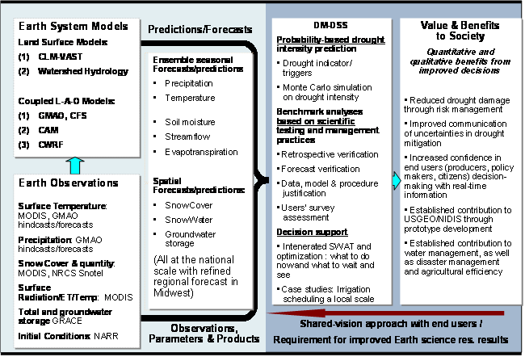

" History "
" Applications "
" Taxonomies "
" Development frameworks "
| "DSS Reservoir" | "DSS Applications" | "DSS V&B" |
|---|---|---|
|  |  | |
| Classification[edit]There are several ways to classify DSS applications. Not every DSS fits neatly into one of the categories, but may be a mix of two or more architectures.Holsapple and Whinston[15] classify DSS into the following six frameworks: text-oriented DSS, database-oriented DSS, spreadsheet-oriented DSS, solver-oriented DSS, rule-oriented DSS, and compound DSS. | One is the clinical decision support system for medical diagnosis. There are four stages in the evolution of clinical decision support system (CDSS). The primitive version is standalone which does not support integration. The second generation of CDSS supports integration with other medical systems. The third generation is standard-based while the fourth is service model-based. | Using the relationship with the user as the criterion, Haettenschwiler differentiates passive, active, and cooperative DSS. A passive DSS is a system that aids the process of decision making, but that cannot bring out explicit decision suggestions or solutions. An active DSS can bring out such decision suggestions or solutions. |
" DSS ""An iterative developmental approach allows for the DSS to be changed and redesigned at various intervals. Once the system is designed, it will need to be tested and revised where necessary for the desired outcome." | ||